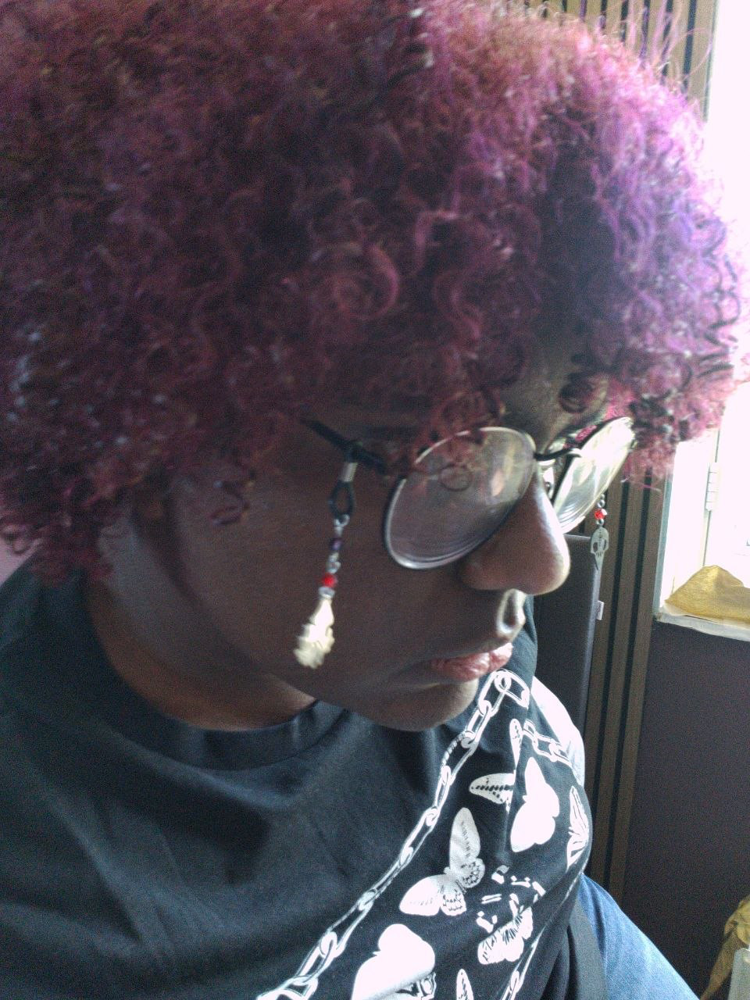

Rowynn Sewkaransing
Hoi, Ik ben Rowynn en ik ben een ethiek ontwerper en front-ender; web development is eenmaal politiek.
about
wie ik ben... wat ik doe.. waarom... en hoe...
Zijn er veel redenen? Idunno!
skills
Ik heb het eerste jaar van CMD gevolgd, dat mij een basis van vaardigheden heeft gegeven voor HTML, CSS & UI/UX vormgeving.
- HTML: ✦✦
- CSS: ✦✦
- Javascript: ✦
- GDScript: ✦
- Figma: ✦✦
- Photoshop: ✦✦
- Illustrator: ✦
interests
Ik hou van nerdy dingen! Ik speel games en lees veel. Mijn favoriete game is DELTARUNE en mijn favoriete boek (echter, een web-serial) is Worm.
Verder doe ik aan cosplay, ben ik een Veganist en een Esperantist!
contact
je mag me mailen via emaill!
📧 hello[at]rowynn[dot]eu for general inquiries